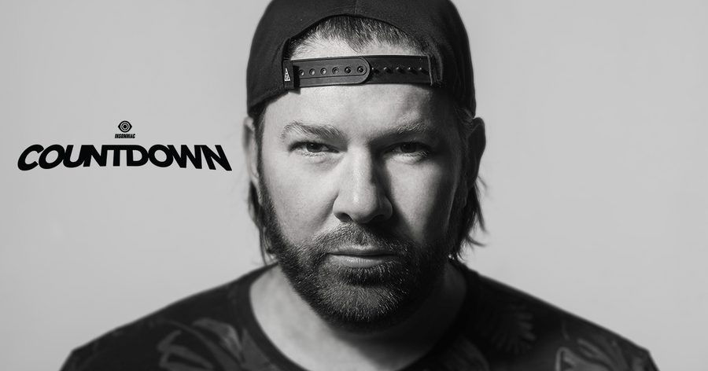

Shiba San Brings a French Touch to His Unbeatable House Grooves


France’s Shiba San emerged from an extensive history in his country’s hip-hop scene, figuring out just a few short years ago that he had a similar knack for killer house grooves. And in an incredibly short amount of time, he’s become a key player in the US house renaissance that’s exploding across the country at this very moment.
How high in the scheme of things, you might be wondering? How about producing, releasing and DJing alongside the likes of Green Velvet and his Relief Records stable, and Claude VonStroke and his unstoppable Dirtybird Records, just to name a few of the achievements Shiba San has secured so far.
When we catch up with the man himself, he confirms he’s reaching the end of what’s been a very productive year, with plenty more on the horizon.
“2018 has been amazing and busier than ever,” he says. “I toured North America, South America, Asia, and Australia. I also released lots of new music on incredible labels like Relief, Dirtybird, KalukiMusik, DFTD, Solä, and Repopulate Mars. My own label, Basement Leak, had a great year, as well.”
In terms of personal highlights, he points to closing the Birdhouse stage at this year’s Dirtybird Campout festival. “Dirtybird fans are one of the best crowds to play for, because they are so full of energy and excitement. Claude VonStroke always hosts a great party that I look forward to every year.”
Truly embedded in the US house scene nowadays, Florida is now the place Shiba San calls home.
“I go back to France when I can, to see family and friends, but I have been based in Miami for the past few years now,” he says. “I just moved to a new neighborhood and built an awesome studio, so I have been spending a lot of my time there, working on new projects.”
The breakout point for the Shiba San journey can be traced back to one track: “Okay,” his 2014 debut under the new alias. Though it was an earlier attempt to fuse his hip-hop heritage with a burgeoning love for Chicago house, he struck gold quickly. The release had an unprecedented impact as one of the anthems of the year, holding the Beatport house #1 spot for 82 days and in the top 10 for more than twice that. Lauded by everyone from Pete Tong to Claude VonStroke and beyond, its success was unexpected, according to Shiba San.
“When I first released ‘Okay,’ I didn’t expect it to be as big as it is now. It got picked up by Dirtybird and was released again on Dirtybird BBQ. Ever since then, I’ve been working hard in the studio and on the road. I played shows almost every weekend in 2018, it’s been busy—but that’s just how I like it.”
“It’s a dream come true getting to do what I love, which is making and sharing my music with the world. I’m just lucky to have such great fans that support my music and come out to all my shows.”
There’s also been a transformational journey involved in leaving behind 15 years of experience as a hip-hop producer. When did he realize he might have a similar knack for house music?
“I’ve loved Chicago house for a very long time and decided I wanted to start experimenting with house music from there. Justin Martin was a big inspiration when I first began producing as Shiba San.”
In terms of recent releases, he’s made his debut on Solardo’s Solä imprint with his Downtown EP.
“I’ve met the Solardo guys a few times, and I really liked their label. They asked me to make an EP, so I worked on tracks to fit with the label. They loved the songs, so it was an easy decision for both of us.”
Even though he’s witnessed monumental success on labels with extreme buzz, Shiba San is investing time and energy into expanding his own imprint to cover more ground than just having a growing release calendar.
“It’s also been a great year of growth for my Basement Leak label. Will Clarke just put out its 10th release with his 8 Bit EP, and we also had the first-ever Basement Leak party in my hometown, Paris, and more recently Los Angeles.”
He says we can expect a lot more to come from the Basement Leak crew on the events side of things, and otherwise plenty more to come in the foreseeable future—both for himself and his label.
“I’m releasing an EP with Kevin Knapp on Lee Foss’ Repopulate Mars on Friday, December 14. It features a remix by Flashmob and another solo track by me. I’m very excited for this one to come out. In January, Dateless will be releasing an EP on Basement Leak. There’s a lot more to come in 2019, but that’s all I can share for now.”
Shiba San is rounding out his year with a set at Insomniac’s Countdown festival on New Year’s Eve—which, incredibly, is now less than three weeks away. What can fans expect?
“I will be playing a lot of my new music at Countdown NYE, both released and unreleased,” he offers cryptically. “But you’ll have to wait and see it for yourself. Expect to have a great time and enter 2019 with a bang!”
Shiba San is playing at Countdown NYE 2018, which takes place Monday, December 31, at NOS Events Center in San Bernardino, CA. Tickets are on sale now. For more information, visit the official website.
Follow Shiba San on Facebook | Twitter | SoundCloud
Follow Countdown on Facebook | Twitter | Instagram